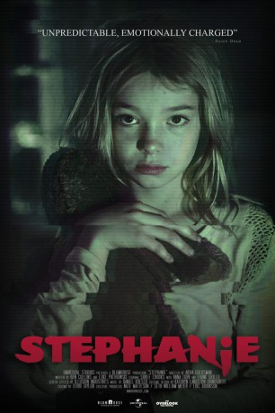

IMDB-Wertung: 5.8 / 10
IMDB-Wertung: 5.8 / 10  Metascore:
Metascore: 
After a mysterious global crisis, a young girl is left alone to hide from a malevolent power that stalks her home. Her parents eventually return and the struggle begins to save their daughter.
Alternativ: Stephanie
 IMDB-Wertung: 5.8 / 10 Metascore:
After a mysterious global crisis, a young girl is left alone to hide from a malevolent power that stalks her home. Her parents eventually return and the struggle begins to save their daughter.
Jahr: 2017
Dauer: 86 Minuten
FSK: 16
Land: USA Studio: Universal PicturesTonspuren: DTS - ,
Untertitel: Deutsch, Englisch,
Auflösung: 1080p (1920x800) Größe: 8089 MB
Genre: Horror, Drama, Fantasy, Mystery
Regisseur: Akiva Goldsman
Drehbuch: Ben Collins, Luke Piotrowski
Soundtrack: Nathan Whitehead
Darsteller:
 Kenneth Choi als (uncredited)
Kenneth Choi als (uncredited) Harold Perrineau als Leader (uncredited)
Harold Perrineau als Leader (uncredited)Datei: X:\2017(N-Z)\Stephanie - Das Böse in ihr (2017, FSK16, 1920x800).mkv seit 30.08.2018
Festplatte: HD 2017(A-Z)-2018(A-F)
 Es gibt insgesamt 170 Filme in der Gruppe '2017(N-Z)'
Es gibt insgesamt 170 Filme in der Gruppe '2017(N-Z)'